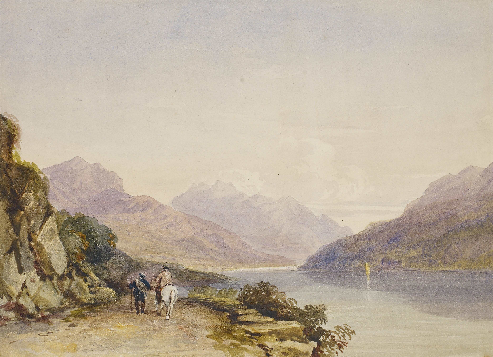

Diferentes cuadros, diferentes estilos de arte en tu espacio
|  |
Arte RealistaMovimiento artístico y literario cuyo propósito fue la representación objetiva de la realidad basada en la observación de los aspectos cotidianos que brindaba la vida de la época. |
|
Arte Abstracto El arte abstracto es un estilo moderno que se opone al realismo y a la fotografía, de esta manera, es necesaria la utilización de la imaginación y la comprensión más allá de lo que la lógica nos entrega para admirar una pintura u obra abstracta. |
|
|
Estilo Cubismo Movimiento artístico europeo de principios del siglo XX caracterizado por la descomposición de la realidad tratando las formas de la naturaleza por medio de figuras geométricas, fragmentando líneas y superficies. |